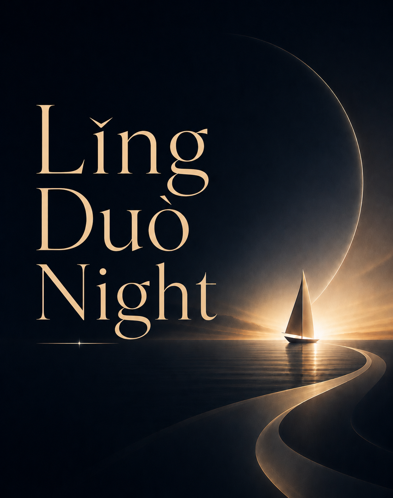

LING DUO NIGHT · 01
考试之外，
什么才是真正重要的能力？
一席 · 沈辛成
当标准答案越来越容易获得， 我们真正需要培养的，究竟是什么？

我们习惯用考试、分数和学历来判断一个人的能力。 从很小的时候开始，我们便不断学习如何答对问题， 如何达到一个已经被设定好的标准。
但当 AI 越来越擅长记忆、整理信息、计算， 甚至能够快速给出一个看似完整的答案时， 一个新的问题也随之出现：
如果标准答案不再稀缺， 什么才是一个人真正重要的能力？
01
THAT NIGHT
那一晚，我们谈了什么？
01
当 AI 可以越来越快地给出答案， “知道答案”本身还会像过去一样重要吗？
02
那些很难被考试衡量的能力——兴趣、创造、 判断、表达与人与人之间的理解—— 应该如何被看见？
03
如果教育不只是为了帮助一个人通过筛选， 那么教育最终应该帮助一个人成为什么样的人？
LING DUO NIGHT · 01
从一部值得看的影片出发，谈生活里真正重要的问题。